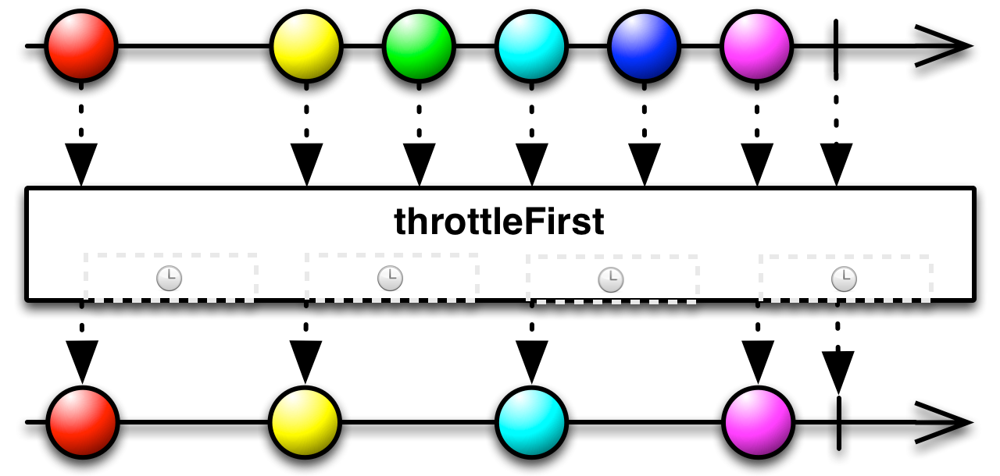
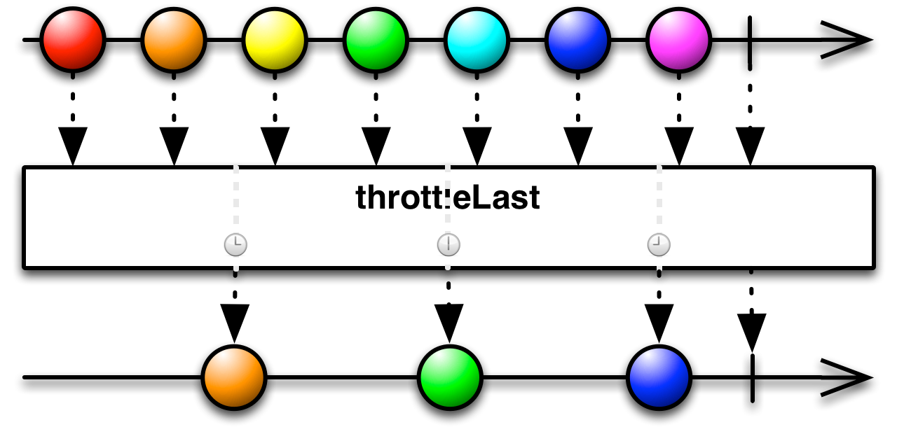
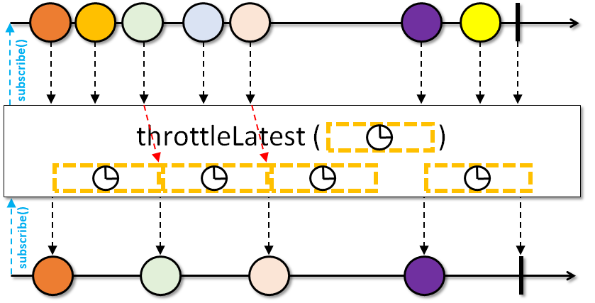
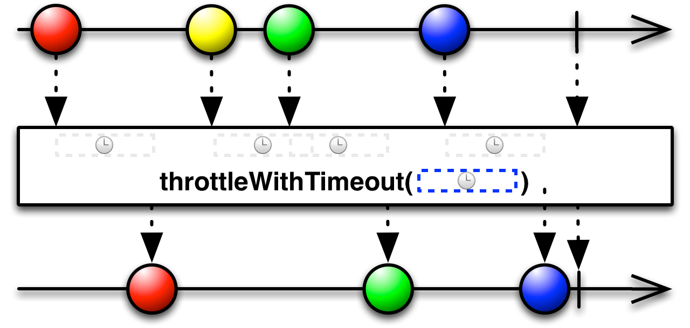

Introduction
I don’t know for what reason but I see from time to time same misunderstanding on different throttle operators in RxJava. Usually nobody says about throttle, instead by default everyone says that debounce can be used. Especially using debounce to avoid multiple clicks on buttons is commonly suggested, which I believe is a bad UX (some examples here and here). Let’s finally look at available options in RxJava and find out when it is better to use what.
Throttle operators
In RxJava there are the following throttle operators:
-
throttleFirst
-
throttleLast
-
throttleLatest
-
throttleWithTimeout / debounce
Let’s take a closer look at these operators.
Note: there are some additional variations of the operators above with different parameters and some additional features, though the difference in some variations of same operator is considered not important in the scope of this article (comparing to the difference between different operators)
Throttle First
Returns an Observable that emits only the first item emitted by the source ObservableSource during sequential time windows of a specified duration. Reference
Source
{kind=link}
In other words if you use throttleFirst on some Observable, you immediately receive the first emitted item, but then next items will come not sooner than windowDuration is expired. So when new item is ready to be emitted, throttleFirst checks whether windowDuration is expired and if yes, then emits that item, otherwise discards it.
When to use:
A good example of usage is to avoid multiple click on button which starts some user-facing feature like opening new screen (which can be delayed because of animation, for example). Important note here is that user-facing feature should start quite fast, so this is not applicable to case of clicking on “Sign in” button when some request to server is sent (which can take quite some time — up to 30 seconds of http timeout? It is definitely a bad idea to add throttleFirst with such an interval). I think explicitly disable button in such a case is better in all senses.
Throttle Last
Returns an Observable that emits only the last item emitted by the source ObservableSource during sequential time windows of a specified duration. Reference
Source
{kind=link}
Unlike throttleFirst, throttleLast just ticks with some defined intervalDuration and emits latest recorded item. It is not guaranteed that first item in upstream will be emitted by throttleLast.
When to use:
As throttleLast is basically ticking good example is timer and updating some data related to that timer with that same interval.
Throttle Latest
Throttles items from the upstream Observable by first emitting the next item from upstream, then periodically emitting the latest item (if any) when the specified timeout elapses between them. If no items were emitted from the upstream during this timeout phase, the next upstream item is emitted immediately and the timeout window starts from then. Reference
Source
{kind=link}
In some sense throttleLatest is some kind of combination of throttleLast and throttleFirst. It is similar to throttleFirst as it guarantees that first item (in the given timeframe) will be emitted immediately. It is similar to throttleLast as when we have multiple events in the same time window — only latest will be emitted and other discarded.
When to use:
As throttleLatest really looks like eager version of throttleLast it is possible to use it in situations similar to throttleLast usages if we’d like to have slightly more information passed over time. It is also possible to use this operator in situations where throttleFirst is good, though throttleFirst is more light-weight so using throttleLatest would sound as an overkill.
Throttle with timeout / debounce
In RxJava there are two operators: throttleWithTimeout and debounce. And they are equivalent. Basically throttleWithTimeout is an alias to debounce. To keep this article consistent around word “throttle” I’ll continue to use throttleWithTimeout here.
Returns an Observable that mirrors the source ObservableSource, except that it drops items emitted by the source ObservableSource that are followed by newer items before a timeout value expires. The timer resets on each emission Reference
Source
{kind=link}
ThrottleWithTimeout is similar to throttleLast, but with dynamic timer. Instead of having static ticking, timer is reset when new item is received leading to many more items being discarded (when many items are received) comparing to throttleLast.
When to use:
The main advantage of debounce is that it can effectively filter out quite a lot of events, this is very good for delayed events which require some long operation to provide results, such as loading suggestions or updating search query. Basically debounce is good for filtering out input changes in text fields (either autocomplete text input or search query text input).
Debounce is not good to use to avoid multiple clicks on buttons (where throttleFirst is better), because first click won’t be handled before timeout is expired — and this is already bad user experience. When I for example click on “Sign in” button multiple times — I’d expect request to server was sent after first click, not after some delay expired.
Conclusion
When deciding which operator to use in your particular situation, try to describe your solution in terms of events and then try to find operator which suits you best. Especially when you would like to filter out some events, don’t just use filter or debounce by default. There are many more different options worth looking at. You can see list of some useful operators for filtering here.
Happy coding!